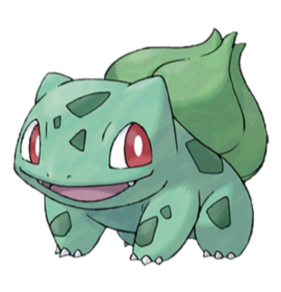
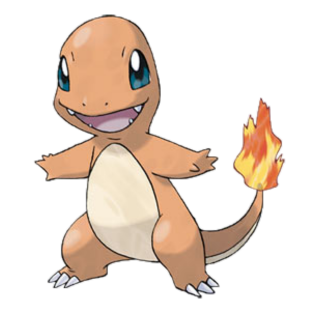
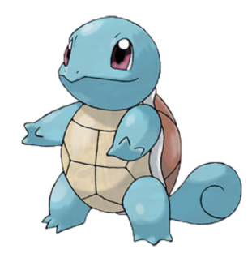
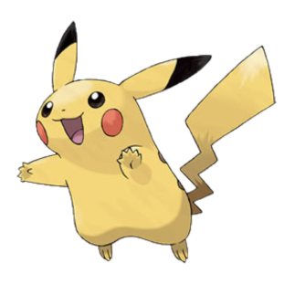

Покедекс
   Бульбазавр (Bulbasaur)
Покемон Травяного и Ядовитого типа.
Бульбазавра можно увидеть дремлющим на самом солнцепеке. У него на спине растет большая семечка. Впитывая солнечный свет семечка очень быстро растет.
Бульбазавр эволюционирует в Ивизавра.
Больше информации.
Чармандер (Charmander)
Покемон Огненного типа.
Пламя, горящее на кончике его хвоста это индикатор настроения. Когда Чармандер доволен и спокоен, огонек еле колышется. Если разозлить покемона – кончик хвоста начинает пылать.
Чармандер эволюционирует
в Чармелеона.
Больше информации.
Сквиртл (Squirtle)
Покемон Водного типа.
Свой панцирь, Сквиртл, использует не только для защиты. Округлая форма панциря и канавки на его поверхности помогают свести к минимуму сопротивление в воде, что позволяет покемону плавать на очень высоких скоростях.
Сквиртл эволюционирует в Вартортла.
Больше информации.
Пикачу (Pikachu)
Покемон Электрического типа.
Когда Пикачу попадается что-то вкусненькое, он поджаривает это разрядом электричества, чтоб вкуснее было, ну и просто на всякий случай. Поэтому если вы вдруг увидели почерневшие ягоды, знайте, Пикачу немного
не рассчитал свой электрический заряд.
Пикачу эволюционирует в Райчу.
Больше информации.